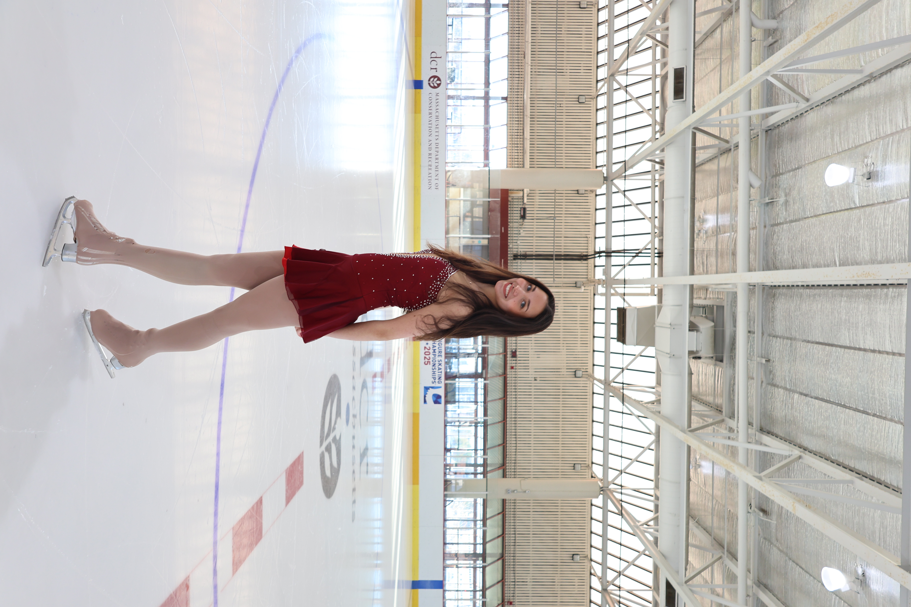

About Me

My name is Eva, and I am a figure skater! I have been skating for over 13 years and have had the opportunity to practice and compete in two different countries. Figure skating has been a huge part of my life and has taught me so much more than just performing on the ice. It has helped me develop discipline, determination, patience, and confidence. My favorite thing about figure skating is how it lets me stay active but at the same time I get to be creative and artistic. Every jump, spin, and movement needs strength, balance, coordination, and precision. I am constantly learning something new and improving, no matter how long I've done the sport. Skating in two different countries let me experience different training environments, meet new people, and learn from different coaches. These experiences really helped me become more adaptable and open to new challenges - even in parts of my life that have nothing to do with skating. Outside of skating, I am a Computer Science and Business Administration student at Northeastern. Even though skating and my academic interests are very different, I find that the discipline, time management, and perseverance I have developed on the ice help me in all aspects of my life. Figure skating is more than just a sport to me; it is a passion that has shaped who I am today!